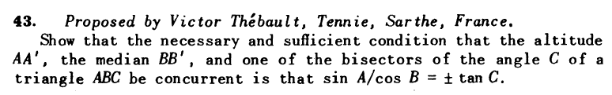

Problema 292.

43.
Mostrar que la condición necesaria y suficiente para que la altura AA',
la mediana BB' y una de las bisectrices del ángulo C de
un triángulo ABC sean concorrentes es que sen A /cos B = + o - tang C.
Thébault, V. (1949): Mathematics Magazine. Vol. 23, No. 2, Nov. - Dec., 1949, p. 103
Propuesto por Juan Bosco Romero Márquez, profesor colaborador de la Universidad de Valladolid.
Nota del editor: Este problema se publica, aunque ya se ha publicado el 262 de esta revista que es idéntico, por el motivo de que
la igualdad de Thebault no fue la solución de Damián Aranda ni de José María Pedret ni de Maite Peña, resolutores del problema..